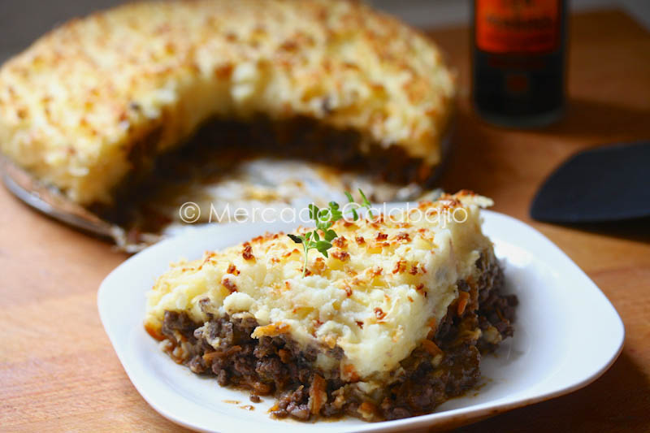
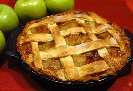
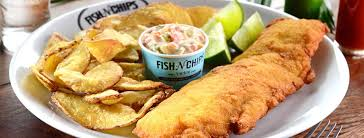
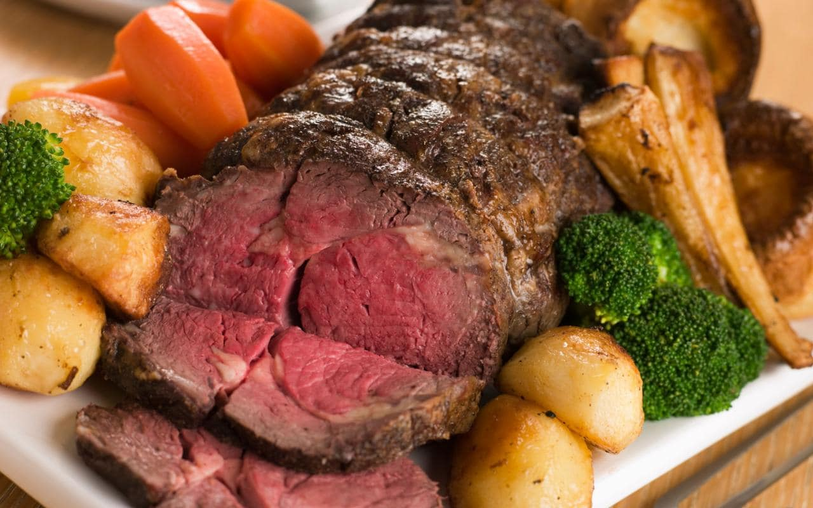
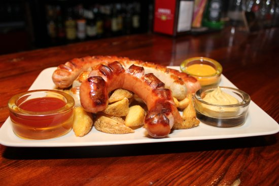

Gastronomia

Londres es una de las ciudades más caras para comer. Sin embargo, existen alternativas interesantes para hacer resistir el presupuesto y disfrutar de su gastronomía
Londres es la ciudad ideal para que el paladar experimente los sabores internacionales ya que no se caracteriza por tener mucha tradición culinaria, sino más bien por ofrecer las mejores degustaciones de diferentes partes del mundo. Sin embargo, se pueden mencionar algunos platos característicos: ● Fish and Chips: este plato tan sencillo se ha convertido en pocos años en una de las comidas rápidas más requeridas en la ciudad. Se trata de pescado rebozado con patatas fritas. Ideal para los niños, para cuando hay poco tiempo para cocinar o para cuando se dispone de pocos minutos para almorzar. Los bares y restaurantes lo preparan rápidamente ● Salchichas inglesas: no existe restaurante que no las ofrezca, se pueden preparar de distinta manera y casi siempre se acompañan con un puré de patatas. Las hay de cerdo y de ternera y se pueden combinar también con diversas salsas especialmente elaboradas ● Pasteles de carne: son buñuelos fritos u horneados, rellenos de carne, pollo, champiñones o riñones ● Roast Beef: es la carne de vacuno que generalmente se condimenta con una mostaza inglesa sumamente especial. Se suele servir también con verduras (brócoli, patatas y zanahoria) ● Apple pie: es el postre por excelencia. Este pastel de manzana es uno de los dulces más solicitados y consumidos por los ingleses. También se comen muchos otros pasteles de frutas, eso sí, deben estar cubiertos con una capa crujiente de masa La comida que se ofrece en los restaurantes es cara. En Londres es complejo, pero no imposible, conseguir precios accesibles a la hora de pretender comer fuera.
● Los restaurantes étnicos son una buena alternativa y los precios son más asequibles que aquellos que habitualmente se pueden encontrar en los restaurantes tradicionales ● Comprar en un supermercado permitirá ahorrar bastante dinero. Si se tiene la posibilidad de cocinar o calentar los alimentos es la alternativa que más se aconseja. Si no es posible, hay que optar por comidas que se puedan ingerir en el momento sin demasiada preparación previa ● Los locales de pizza suelen ofrecer precios relativamente económicos ● La comida más económica es la asiática. Muchos restaurantes ofrecen platos a 7 dólares antes de las 19 hs ● El barrio Soho, se caracteriza por disponer de muchos sitios para comer diversas clases de comida. La comida tailandesa es considerada la especialidad de la zona y es posible comer por 14 dólares. Un menú de tres platos puede llegar a costar unos 20 dólares ● Los pubs son otra elección interesante para poder disfrutar de una comida económica, aunque no será abundante, los precios están un poco más acomodados que en los restaurantes y es el sitio donde la mayoría de ciudadanos y también turistas se juntan
